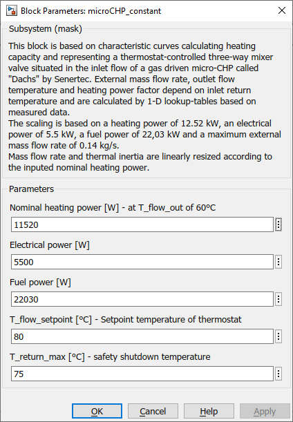

microCHP_constant
Path: CARNOT/Source/Cogeneration
Purpose:
This block calculates mass flow rate and outlet flow temperature depending on
inlet return temperature and inputed nominal heating power of a gas driven
micro-CHP with constant power.
Description:
This block is based on characteristic curves calculating heating capacity
and representing a thermostat-controlled three-way mixer valve situated
in the inlet flow of a gas driven micro-CHP called "Dachs" by Senertec.
External mass flow rate, outlet flow temperature and heating power factor
depend on inlet return temperature and are calculated by 1-D lookup-tables
based on measured data.
The scaling is based on
Mass flow rate and thermal inertia are linearly resized according to the inputed nominal heating power. Thermal and electrical efficiency are calculated and summarised in a data output vector.
Input:
| THBretrun | : | Thermo-Hydraulic Bus of the inlet (return line) |
| control | : | control signal in 0 / 1 |
Output:
| THBflow | : | Thermo-Hydraulic Bus of the outlet (flow line) |
| data | : | evaluation data bus |
The evaluation data bus is:
| Q_th | delivered thermal energy | J |
| Q_el | delivered electric energy | J |
| Q_Gas | consumed energy from the gas supply | J |
| eta_th | thermal efficiency (= Q_th/Q_Gas) | - |
| eta_el | electrical efficiency (= Q_el/Q_Gas) | - |
| eta_sys | total or system efficiency (= (Q_th+Q_el)/Q_Gas) | - |
Parameters and Dialog Box:

Examples:
Open the example explorer from the Matlab command window
ExampleBrowser
or load the examples via the CARNOT library.
Literature:
Diourane Mouhcin: Aufbereitung von zwei vorhandenen BHKW-Modellen
zur Bereitstellung in der Carnot-User-Community (Bachelor-Arbeit), 2012
Characteristics:
| Direct Feedthrough | : | No |
| Sample Time | : | Inherited from driving block |
| Vectorized | : | No |